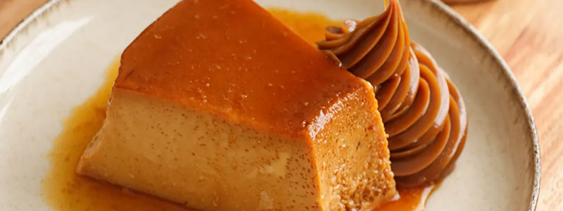
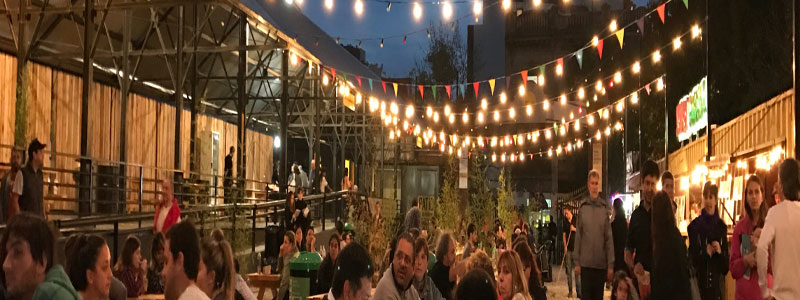

Donde comer
En este buscador vas a poder filtrar por nombre, tipo de establecimientos y barrios


En este buscador vas a poder filtrar por nombre, tipo de establecimientos y barrios

En buenos aires vas a encontrar platos tipicos y comida de todo el mundo

conoce los patios y mercados en donde podes disfrutar de la mejor gastronomia